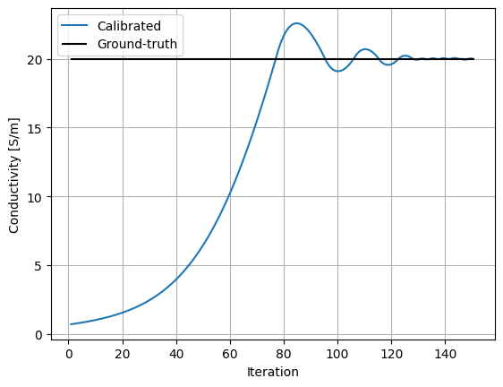
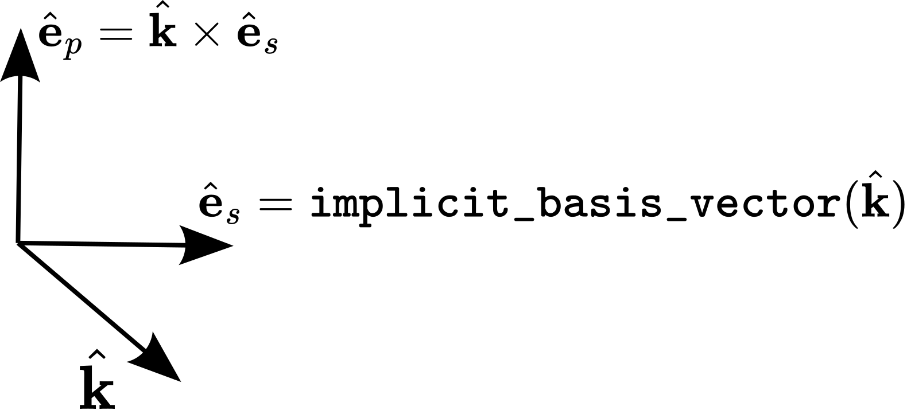
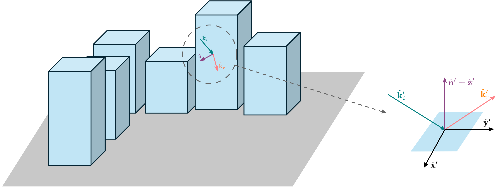

Understanding Radio Materials#
Radio materials define how objects scatter incident radio waves. They implement all necessary components to simulate the interaction between radio waves and objects composed of specific materials.
Modifying Parameters of Radio Materials#
To show how to modify the parameters of radio materials, we start by loading a scene that consists only of a single reflector. We also instantiate a transmitter and a receiver, each equipped with a single antenna.
scene = load_scene(rt.scene.simple_reflector, merge_shapes=False)
scene.add(Transmitter("tx", position=(-2., 0., 1)))
scene.add(Receiver("rx", position=(2., 0., 1)))
scene.tx_array = PlanarArray(num_rows=1, num_cols=1, pattern="iso", polarization="V")
scene.rx_array = PlanarArray(num_rows=1, num_cols=1, pattern="iso", polarization="V")
We then change the radio material of the reflector to a RadioMaterial instance.
We set the relative permittivity and conductivity of the material to specific values.
# Instantiate the radio material
my_mat = RadioMaterial("my-mat",
thickness=0.1,
relative_permittivity=5.,
conductivity=1)
# Assign the radio material to the reflector
scene.objects["reflector"].radio_material = my_mat
# To avoid confusion, discard the radio material initially loaded with the scene
scene.remove("reflector-mat")
# Print the material to visualize its parameters
print(scene.radio_materials)
{'my-mat': RadioMaterial eta_r=5.000
sigma=1.000
thickness=0.100
scattering_coefficient=0.000
xpd_coefficient=0.000}
We can now compute paths and print their gains for different values of the conductivity.
# Instantiate the path solver
solver = PathSolver()
conductivities = [1., 100., 10000., 1000000.]
for sigma in conductivities:
my_mat.conductivity = sigma
paths = solver(scene)
# Paths coefficient
a, tau = paths.a, paths.tau
a = a[0].numpy() +1j*a[1].numpy()
a = np.squeeze(a, (0,1,2,3))
tau = tau.numpy()
tau = np.squeeze(tau, (0,1))
print("Conductivity [S/m]:", sigma)
for a_, tau_ in zip(a, tau):
print("\t Delay [ns]: ", tau_*1e9, " Gain [dB]", 10.*np.log10(np.square(np.abs(a_))))
Conductivity [S/m]: 1.0
Delay [ns]: 13.342564 Gain [dB] -55.370346
Delay [ns]: 14.917439 Gain [dB] -69.881165
Conductivity [S/m]: 100.0
Delay [ns]: 13.342564 Gain [dB] -55.370346
Delay [ns]: 14.917439 Gain [dB] -57.55436
Conductivity [S/m]: 10000.0
Delay [ns]: 13.342564 Gain [dB] -55.370346
Delay [ns]: 14.917439 Gain [dB] -56.460648
Conductivity [S/m]: 1000000.0
Delay [ns]: 13.342564 Gain [dB] -55.370346
Delay [ns]: 14.917439 Gain [dB] -56.351566
The two paths correspond to the line-of-sight and reflected paths, in that order. We can see how the reflected path gain increases as the conductivity of the reflector is set to higher values.
Calibrating Material Parameters Through Gradient Descent#
We consider a simple example in which we aim to retrieve the conductivity of the a radio material through gradient descent.
To that aim, we define a second scene with the same setup, except that the conductivity is initialized to an arbitrary value and is trainable. We will then retrieve the value of the conductivity through gradient descent on the normalized absolute error between the path gain computed for the previously defined scene (reference scene) and the trainable one.
trainable_scene = load_scene(rt.scene.simple_reflector, merge_shapes=False)
trainable_scene.add(Transmitter("tx", position=(-2., 0., 1)))
trainable_scene.add(Receiver("rx", position=(2., 0., 1)))
trainable_scene.tx_array = PlanarArray(num_rows=1, num_cols=1, pattern="iso", polarization="V")
trainable_scene.rx_array = PlanarArray(num_rows=1, num_cols=1, pattern="iso", polarization="V")
In order to assign trainable variables to the reflector material properties, we need to first instantiate an optimizer. The optimizer is used to instantiate trainable variables.
# Adam optimizer
learning_rate = 4e-2
opt = mi.ad.Adam(lr=learning_rate)
We then replace the material reflector by a newly instantiated material with a
trainable conductivity property.
To ensure that the conductivity remains non-negative, the trainable variable is
defined as its logarithm (logit), and the actual conductivity is computed from
the logit using a numerically stable sigmoid() function.
def logit_2_conductivity(logit):
max_conductivity = 100.
return sigmoid(logit)*max_conductivity
# Trainable variable is the logit of the conductivity
# It is initialized to an arbitrary value
opt["logit_conductivity"] = mi.Float(-5.)
# Instantiate the radio material
# The conductivity is initialized using the trainable variable
trainable_mat = RadioMaterial("my-trainable-mat",
thickness=0.1,
relative_permittivity=5.,
conductivity=logit_2_conductivity(opt["logit_conductivity"])) # Use the trainable variable
# Assign the radio material to the reflector
trainable_scene.objects["reflector"].radio_material = trainable_mat
# To avoid confusion, discard the radio material initially loaded with the scene
trainable_scene.remove("reflector-mat")
# Print the material to visualize its parameters
print(trainable_scene.radio_materials)
{'my-trainable-mat': RadioMaterial eta_r=5.000
sigma=0.669
thickness=0.100
scattering_coefficient=0.000
xpd_coefficient=0.000}
Backpropagation through a drjit loop can currently only be done when the
evaluated mode is used for the computation of the electric field by the solver.
solver = PathSolver()
# Switch the computation of field loop to "evaluated" mode to
# enable gradient backpropagation through the loop
solver.loop_mode = "evaluated"
We can now run the optimization that performs gradient descent on the normalized absolute error between the gain obtained using the trainable scene and the one obtained using the reference scene instantiated at the beginning of this guide.
def total_gain(paths):
a_real, a_imag = paths.a
g = dr.sum(dr.square(a_real) + dr.square(a_imag))
return g
# Normalized absolute error
# The `dr.detach()` function stops gradient from
# propagating through its input
def nae(x, y):
return dr.abs(x-y)*dr.detach(dr.rcp(y))
num_iterations = 150
# Ground-truth
scene.radio_materials["my-mat"].conductivity = 20.
ref_paths = solver(scene)
ref_gain = dr.detach(total_gain(ref_paths))
# Record the conductivity value
conductivity = []
# Optimization loop
for _ in range(num_iterations):
# Run simulation
paths = solver(trainable_scene)
# Compute loss on total gain and the gradients
gain = total_gain(paths)
loss = nae(gain, ref_gain)
dr.backward(loss)
# Optimizer step
opt.step()
updated_conductivity = logit_2_conductivity(opt["logit_conductivity"])
conductivity.append(updated_conductivity.numpy())
trainable_mat.conductivity = updated_conductivity
plt.figure()
plt.grid(True)
plt.plot(np.arange(1, num_iterations+1), conductivity, label="Calibrated")
plt.hlines([scene.get("my-mat").conductivity], 1, num_iterations+1, color="k", label="Ground-truth")
plt.xlabel("Iteration")
plt.ylabel("Conductivity [S/m]")
plt.legend();
{kind=link}

Custom Radio Materials#
Compared to what was done in the previous section, we will now implement a
scattering model by defining a new class that inherits from the
RadioMaterialBase abstract class, which allows us to freely
define how a material scatters an incident wave.
We will start by detailing how Jones vectors and matrices are represented in Sionna RT. It is highly recommended to first read the Primer on Electromagnetics to understand the basics of radio wave propagation.
Representation of Jones vector and Matrices#
As detailed in the Primer on Electromagnetics, a wave phasor
is typically represented by a Jones vector \(\mathbf{E} \in \mathbb{C}^2\).
However, as drjit does not currently support complex-valued vectors and
matrices, Sionna RT uses the equivalent real-valued representation of two-dimensional
complex-valued vectors, which represents a Jones vector as a real-valued vector
with 4 dimensions:
Similarly, a Jones matrix \(\mathbf{M}\), which is a complex-valued matrix of size \(2 \times 2\) that models an interaction with the environment, is represented by the equivalent \(4 \times 4\) real-valued matrix
In the rest of this guide, we will interchangeably use both representations to write equations. However, all implementations use the real-valued representation.
Implicit Basis#
A wave phasor \(\mathbf{E}\) is expressed by two arbitrary orthogonal polarization directions S and P:
which are both orthogonal to the direction of propagation vector \(\hat{\mathbf{k}}\), i.e., \(\hat{\mathbf{e}}_{s}^{\mathsf{T}} \hat{\mathbf{e}}_{p}=\hat{\mathbf{e}}_{s}^{\mathsf{T}} \hat{\mathbf{k}}=\hat{\mathbf{e}}_{p}^{\mathsf{T}} \hat{\mathbf{k}} = 0\). As \((\hat{\mathbf{e}}_{s}, \hat{\mathbf{e}}_{p}, \hat{\mathbf{k}})\) forms an orthonormal basis, only the knowledge of the S basis vector \(\hat{\mathbf{e}}_{s}\) (in addition to the direction of propagation \(\hat{\mathbf{k}}\)) is required to define the reference basis in which the wave phasor is represented.
To avoid storing the S basis vector for every wave phasor, an implicit basis is used in Sionna RT.
More precisely, a wave phasor that propagates in direction \(\hat{\mathbf{k}}\)
is always assumed to use as S basis vector the unit vector computed from its
direction of propagation by the utility implicit_basis_vector().
This utility deterministically constructs a unit vector orthogonal to
\(\hat{\mathbf{k}}\) to be used as S basis vector \(\hat{\mathbf{e}}_{s}\).
{kind=link}

When implementing a custom radio material in Sionna RT, it is therefore required to compute the Jones matrix describing the interaction with the material assuming that the Jones vector on which the matrix is applied describes the wave using the implicit basis. Moreover, it is required that the result of applying this Jones matrix is a Jones vector that also describes the scattered wave using the implicit basis.
The Local Interaction Basis#
Computing the Jones matrix and direction of propagation of the scattered wave resulting from an interaction is facilitated in Sionna RT by defining a local coordinate system specific to this interaction.
This local interaction coordinate system is defined such that the local Z axis corresponds to the normal to the scatterer surface at the interaction point, and the X and Y axes are tangent to the scatterer surface at the interaction point.
Using the prime (\('\)) notation to indicate that a vector is represented in the local coordinate system, we therefore have \(\mathbf{n'} = \begin{bmatrix}0\\0\\1\end{bmatrix}\).
{kind=link}

Mandatory Subclass Methods#
Implementing a custom radio material requires defining a class that inherits from
RadioMaterialBase and implements the following methods:
sample()#
Samples an interaction type and the direction of propagation of the scattered wave (which typically depend on the sampled interaction type). This function must return, among others, the sample interaction type, direction of propagation of the scattered wave, and Jones matrix that models the interaction.
Sampling of the material is required as, when a ray modeling an incident wave intersects a scatterer, only a single ray can be spawn to model the scattered field. Indeed, spawning more than one ray per interaction (e.g., one refracted and one reflected ray, or multiple diffusely reflected rays) is computationally prohibitive as it leads to an exponential scaling of the complexity with the path length. Therefore, a single ray corresponding to a single interaction type (e.g., refracted or reflected) and a single direction of propagation are randomly sampled. Accurate modeling of the scattered field is achieved by having a large number of incident rays interacting with the material resulting in independently sampled scattered rays that model well the scattered field.
eval()#
Evaluates the Jones matrix for a given interaction type, direction of incidence,
and direction of scattering. Compared to sample(),
this method does not sample the material.
pdf()#
Returns the probability that a given interaction type and direction of scattering are sampled conditioned on a given direction of incidence.
traverse()#
Traverses the attributes and objects of the material. This method is used to record the material parameters, and especially the differentiable parameters.
to_string()#
Returns a string describing the material. This is used to “print” the material in a humanly readable way.
Implementation of a Simple Radio Material Model#
For simplicity, we will start by implementing a scattering model that only reflects incident radio waves specularly, and such that the energy of the reflected wave equals the one of the incident wave scaled by a parameter \(g \in (0,1)\).
Formally, this simple material model implements the following transfer equation. The direction of propagation of the reflected ray \(\hat{\mathbf{k}}_\text{r}\) is computed as:
where \(\hat{\mathbf{k}}_\text{i}\) is the direction of propagation of the incident wave and \(\hat{\mathbf{n}}\) the normal to the scatterer at the interaction point.
The reflected wave phasor \(\mathbf{E}_\text{r}\) is represented as
where
and
is the incident wave phasor. In these equations, \((\hat{\mathbf{e}}_{\text{i},s}, \hat{\mathbf{e}}_{\text{i},p})\) and \((\hat{\mathbf{e}}_{\text{r},s}, \hat{\mathbf{e}}_{\text{r},p})\) are the implicit basis for the incident and scattered wave, respectively, and \(\mathbf{W}\left(\hat{\mathbf{x}}_{2}, \hat{\mathbf{y}}_{2}, \hat{\mathbf{x}}_{1}, \hat{\mathbf{y}}_{1}\right)\) is the change-of-basis matrix from basis \((\hat{\mathbf{x}}_{1}, \hat{\mathbf{y}}_{1})\) to basis \((\hat{\mathbf{x}}_{2}, \hat{\mathbf{y}}_{2})\) defined in the Primer on Electromagnetics .
Let’s now implement this radio material model.
Note that only the sample(), eval(),
and pdf() methods are required to actually
implement the previous equations.
The direction of propagation of the incident wave is assumed to be provided to the radio material represented in the local coordinate system. The direction of reflection (56) can then be computed by leveraging the fact that \(\hat{\mathbf{n}} = \hat{\mathbf{z}}\) as shown in the following code snippet, where an arbitrary direction of incidence is defined.
# Arbitrary direction of incidence used in this example.
# The z component of the incident direction of propagation can only be negative
ki_prime = dr.normalize(mi.Vector3f(1., 2., -1.))
print("ki_prime", ki_prime)
# By definition
n_prime = mi.Vector3f(0., 0., 1.)
kr_prime = ki_prime - 2.*dr.dot(n_prime, ki_prime)*n_prime
print("kr_prime", kr_prime)
ki_prime [[0.408248, 0.816497, -0.408248]]
kr_prime [[0.408248, 0.816497, 0.408248]]
Equivalently, one can use the Mitsuba utility mi.reflect(). Note that this utility uses the rendering convention for representing direction of propagation, in which the input vector points away from the interaction point:
# Expects an input vector that points away from the interaction point
print("kr_prime", mi.reflect(-ki_prime))
kr_prime [[0.408248, 0.816497, 0.408248]]
To compute the scattered field (57), the Jones matrix needs to be constructed such that both the incident field and the scattered field (resulting from applying the Jones matrix) are represented in their respective implicit world coordinate system. Therefore, the Jones matrix in (57), i.e.,
is such that the change-of-basis matrix \(\mathbf{W}\left(\hat{\mathbf{e}}_{\text{i},\perp}, \hat{\mathbf{e}}_{\text{i},\parallel}, \hat{\mathbf{e}}_{\text{i},s}, \hat{\mathbf{e}}_{\text{i},p}\right)\) is from the implicit world coordinate system for the direction of propagation \(\hat{\mathbf{k}}_i\) to the coordinate system where \(\hat{\mathbf{e}}_{\text{i},\perp}\) is the TE polarization and \(\hat{\mathbf{e}}_{\text{i},\parallel}\) is the TM polarization for the incident wave. Similarly, \(\mathbf{W}\left(\hat{\mathbf{e}}_{\text{r},s}, \hat{\mathbf{e}}_{\text{r},p}, \hat{\mathbf{e}}_{\text{r},\perp}, \hat{\mathbf{e}}_{\text{r},\parallel}\right)\) is the change-of-basis matrix from the coordinate system where \(\hat{\mathbf{e}}_{\text{r},\perp}\) is the TE polarization and \(\hat{\mathbf{e}}_{\text{r},\parallel}\) is the TM polarization for the scattered wave to the implicit world coordinate system for the direction of propagation \(\hat{\mathbf{k}}_r\).
As Jones matrices with this structure are commonly used to model specular reflection
and refraction, Sionna RT provides the jones_matrix_to_world_implicit()
utility to construct such matrices.
In this case, we can utilize this function by setting both c1 and c2 parameters to
\(\sqrt{g}\).
The next code snippet provides an implementation of the previous model as a custom
radio material, with comments explaining every step.
Consulting the API documentation of RadioMaterialBase is essential
for a detailed understanding of this code.
It is also recommended to consult the
API documentation of the mi.BSDF class,
as RadioMaterialBase inherits from it.
class CustomRadioMaterial(RadioMaterialBase):
# The __init__ method builds the radio material from:
# - A unique `name` to identify the material instance in the scene
# - The gain parameter `g`
# - An optional `color` for displaying the material in the previewer and renderer
# Providing these 3 parameters to __init__ is how an instance of this radio material
# is built programmatically.
#
# When loading a scene from an XML file, Mitsuba provides to __init__
# only an `mi.Properties` object containing all the properties of the material
# read from the XML scene file. Therefore, when a `props` object is provided,
# the other parameters are ignored and should not be given.
def __init__(self,
name : str | None = None,
g : float | mi.Float | None = None,
color : Tuple[float, float, float] | None = None,
props : mi.Properties | None = None):
# If `props` is `None`, then one is built from the
# other parameters
if props is None:
props = mi.Properties("custom-radio-material")
# Name of the radio material
props.set_id(name)
props["g"] = g
if color is not None:
props["color"] = mi.ScalarColor3f(color)
# Read the gain from `props`
g = 0.0
if "g" in props:
g = props["g"]
del props["g"]
self._g = mi.Float(g)
# The other parameters (`name`, `color`) are given to the
# base class to complete the initialization of the material
super().__init__(props)
def sample(
self,
ctx : mi.BSDFContext,
si : mi.SurfaceInteraction3f,
sample1 : mi.Float,
sample2 : mi.Point2f,
active : bool | mi.Bool = True
) -> Tuple[mi.BSDFSample3f, mi.Spectrum]:
# Read the incident direction of propagation in the local coordinate
# system
ki_prime = si.wi
# Build the 3x3 change-of-basis matrix from the local basis to the world
# basis.
# `si.sh_frame` stores the three vectors that define the local interaction basis
# in the world coordinate system.
to_world = mi.Matrix3f(si.sh_frame.s, si.sh_frame.t, si.sh_frame.n).T
# Direction of propagation of the reflected field in the local coordinate system
kr_prime = mi.reflect(-ki_prime)
# Compute the Jones matrix in the implicit world coordinate system
# The `jones_matrix_to_world_implicit()` builds the Jones matrix with the
# structure we need.
sqrt_g = mi.Complex2f(dr.sqrt(self._g), 0.)
jones_mat = jones_matrix_to_world_implicit(c1=sqrt_g,
c2=sqrt_g,
to_world=to_world,
k_in_local=ki_prime,
k_out_local=kr_prime)
## We now only need to prepare the outputs
# Cast the Jones matrix to a `mi.Spectrum` to meet the requirements of
# the BSDF interface of Mitsuba
jones_mat = mi.Spectrum(jones_mat)
# Instantiate and set the BSDFSample object
bs = mi.BSDFSample3f()
# Specifies the type of interaction that was computed
bs.sampled_component = InteractionType.SPECULAR
# Direction of the scattered wave in the world frame
bs.wo = to_world@kr_prime
# The next field of `bs` stores the probability that the sampled
# interaction type and direction of scattering are sampled conditioned
# on the given direction of incidence.
# As only one event and direction of scattering are possible with this model,
# this probability is set to 1.
bs.pdf = mi.Float(1.)
# Not used but required to be set
bs.sampled_type = mi.UInt32(+mi.BSDFFlags.DeltaReflection)
bs.eta = 1.0
return bs, jones_mat
def eval(
self,
ctx : mi.BSDFContext,
si : mi.SurfaceInteraction3f,
wo : mi.Vector3f,
active : bool | mi.Bool = True
) -> mi.Spectrum:
# Read the incident direction of propagation in the local coordinate
# system
ki_prime = si.wi
# Build the 3x3 change-of-basis matrix from the local basis to the world
# basis.
# `si.sh_frame` stores the three vectors that define the local interaction basis
# in the world coordinate system.
to_world = mi.Matrix3f(si.sh_frame.s, si.sh_frame.t, si.sh_frame.n).T
# Direction of propagation of the reflected field in the local coordinate system
kr_prime = mi.reflect(-ki_prime)
# Compute the Jones matrix in the implicit world coordinate system
# The `jones_matrix_to_world_implicit()` builds the Jones matrix with the
# structure we need.
sqrt_g = mi.Complex2f(dr.sqrt(self._g), 0.)
jones_mat = jones_matrix_to_world_implicit(c1=sqrt_g,
c2=sqrt_g,
to_world=to_world,
k_in_local=ki_prime,
k_out_local=kr_prime)
# This model only scatters energy in the direction of the specular reflection.
# Any other direction provided by the user `wo` should therefore lead to no energy.
is_valid = isclose(dr.dot(kr_prime, wo), mi.Float(1.))
jones_mat = dr.select(is_valid, jones_mat, 0.)
# Cast the Jones matrix to a `mi.Spectrum` to meet the requirements of
# the BSDF interface of Mitsuba
jones_mat = mi.Spectrum(jones_mat)
return jones_mat
def pdf(
self,
ctx : mi.BSDFContext,
si : mi.SurfaceInteraction3f,
wo : mi.Vector3f,
active : bool | mi.Bool = True
) -> mi.Float:
# Read the incident direction of propagation in the local coordinate
# system
ki_prime = si.wi
# Direction of propagation of the reflected field in the local coordinate system
kr_prime = mi.reflect(-ki_prime)
# As only one event and direction of scattering are possible with this model,
# the probability is set to 1 for this direction and 0 for any other.
is_valid = isclose(dr.dot(kr_prime, wo), mi.Float(1.))
return dr.select(is_valid, mi.Float(1.), mi.Float(0.))
def traverse(self, callback : mi.TraversalCallback):
# Registers the `g` parameter as a differentiable
# parameter of the scene
callback.put('g', self._g, mi.ParamFlags.Differentiable)
def to_string(self) -> str:
# Returns a humanly readable description of the material
s = f"CustomRadioMaterial["\
f"g={self._g}"\
f"]"
return s
# We add a getter and setter to access `g`
@property
def g(self):
return self._g
@g.setter
def g(self, v):
self._g = mi.Float(v)
# Register the custom radio material as a Mitsuba plugin
mi.register_bsdf("custom-radio-material",
lambda props: CustomRadioMaterial(props=props))
Let’s now use this custom radio material in a Sionna RT scene! We start by loading a new scene, then instantiate the newly created radio material and use it for the reflector. We set \(g\) to a very low value to clearly see the impact on the reflected path gain.
scene_custom_mat = load_scene(rt.scene.simple_reflector, merge_shapes=False)
scene_custom_mat.add(Transmitter("tx", position=(-2., 0., 1)))
scene_custom_mat.add(Receiver("rx", position=(2., 0., 1)))
scene_custom_mat.tx_array = PlanarArray(num_rows=1, num_cols=1, pattern="iso", polarization="V")
scene_custom_mat.rx_array = PlanarArray(num_rows=1, num_cols=1, pattern="iso", polarization="V")
my_mat = CustomRadioMaterial("custom-mat-instance", g=0.01)
# Assign the custom radio material to the reflector
scene_custom_mat.objects["reflector"].radio_material = my_mat
# To avoid confusion, discard the radio material initially loaded with the scene
scene_custom_mat.remove("reflector-mat")
# Print the material to visualize its parameters
print(scene_custom_mat.radio_materials)
{'custom-mat-instance': CustomRadioMaterial[g=[0.01]]}
We can see that the to_string() function we
have defined is used to describe the material.
We are now ready to trace paths.
paths = solver(scene_custom_mat)
a, tau = paths.a, paths.tau
a = a[0].numpy() +1j*a[1].numpy()
a = np.squeeze(a, (0,1,2,3))
tau = tau.numpy()
tau = np.squeeze(tau, (0,1))
for a_, tau_ in zip(a, tau):
print("Delay [ns]: ", tau_*1e9, " Gain [dB]", 10.*np.log10(np.square(np.abs(a_))))
Delay [ns]: 13.342564 Gain [dB] -55.370346
Delay [ns]: 14.917439 Gain [dB] -76.33944
We can see that the gain of the reflected path is low because of the low value of \(g\). Let’s now set the value of \(g\) to a higher value:
my_mat.g = 0.9
# Paths coefficient
paths = solver(scene_custom_mat)
a, tau = paths.a, paths.tau
a = a[0].numpy() +1j*a[1].numpy()
a = np.squeeze(a, (0,1,2,3))
tau = tau.numpy()
tau = np.squeeze(tau, (0,1))
for a_, tau_ in zip(a, tau):
print("Delay [ns]: ", tau_*1e9, " Gain [dB]", 10.*np.log10(np.square(np.abs(a_))))
Delay [ns]: 13.342564 Gain [dB] -55.370346
Delay [ns]: 14.917439 Gain [dB] -56.79702
The reflected path now has a significantly higher gain!
Next, let’s compute a gradient of \(g\).
The first step is to enable the gradient for this parameter.
We then switch to the evaluated mode of as backpropagation through
a drjit loop can currently only be done with this mode.
All we need to to next is to use
dr.backward()
to compute gradients.
For this toy example, we use the total gain as objective function.
dr.enable_grad(my_mat.g)
# Switch the computation of field loop to "evaluated" mode to
# enable gradient backpropagation through the loop
solver.loop_mode = "evaluated"
paths = solver(scene_custom_mat)
gain = dr.sum(dr.square(paths.a[0]) + dr.square(paths.a[1]))
dr.backward(gain)
print("Gradient", my_mat.g.grad)
Gradient [2.32303e-06]
As expected, the gradient is positive as increasing the path gain requires increasing \(g\).
A More Complex Material Model#
Let’s now enhance the previous radio material model by incorporating support for refraction, which refers to radio waves passing through the material. Note that this model will not account for the refraction of radio waves as they pass through both the first and second boundaries of the scatterer. Instead, we will directly model the electromagnetic field that emerges after passing through the entire reflector.
In addition to the previous model for specular reflection described by (56)-(57), this enhanced model also supports refraction as follows. The transmitted wave \(\mathbf{E}_\text{t}\) propagates in the direction \(\mathbf{k}_\text{t}\) such that
where \(\hat{\mathbf{k}}_\text{i}\) is the direction of propagation of the incident wave.
The transmitted wave phasor \(\mathbf{E}_\text{t}\) is represented as
where
and
is the incident wave phasor. In these equations, \((\hat{\mathbf{e}}_{\text{i},s}, \hat{\mathbf{e}}_{\text{i},p})\) and \((\hat{\mathbf{e}}_{\text{t},s}, \hat{\mathbf{e}}_{\text{t},p})\) are the implicit basis for the incident and scattered wave, respectively.
The next code snippet provides an implementation of the previous model as a
custom radio material, with comments explaining every step.
Note that, unlike the previous model, the sample()
method is required to determine an interaction type (either specular reflection or refraction).
This sampling process is executed by using a Bernoulli distribution where the
probability of selecting an interaction type corresponds to the ratio of energy
scattered through that interaction.
Consulting the API documentation of RadioMaterialBase is essential
for a detailed understanding of this code.
It is also recommended to consult the
API documentation of the mi.BSDF class,
as RadioMaterialBase inherits from it.
class EnhancedCustomRadioMaterial(RadioMaterialBase):
# Note: The __init__ method is identical to the one of `CustomRadioMaterial`.
# The __init__ method builds the radio material from:
# - A unique `name` to identify the material instance in the scene
# - The gain parameter `g`
# - An optional `color` for displaying the material in the previewer and renderer
# Providing these 3 parameters to __init__ is how an instance of this radio material
# is built programmatically.
#
# When loading a scene from an XML file, Mitsuba provides to __init__
# only an `mi.Properties` object containing all the properties of the material
# read from the XML scene file. Therefore, when a `props` object is provided,
# the other parameters are ignored and should not be given.
def __init__(self,
name : str | None = None,
g : float | mi.Float | None = None,
color : Tuple[float, float, float] | None = None,
props : mi.Properties | None = None):
# If `props` is `None`, then one is built from the
# other parameters
if props is None:
props = mi.Properties("enhanced-custom-radio-material")
# Name of the radio material
props.set_id(name)
props["g"] = g
if color is not None:
props["color"] = mi.ScalarColor3f(color)
# Read the gain from `props`
g = 0.0
if "g" in props:
g = props["g"]
del props["g"]
self._g = mi.Float(g)
# The other parameters (`name`, `color`) are given to the
# base class to complete the initialization of the material
super().__init__(props)
def sample(
self,
ctx : mi.BSDFContext,
si : mi.SurfaceInteraction3f,
sample1 : mi.Float,
sample2 : mi.Point2f,
active : bool | mi.Bool = True
) -> Tuple[mi.BSDFSample3f, mi.Spectrum]:
g = self._g
# Read the incident direction of propagation in the local coordinate
# system
ki_prime = si.wi
# Build the 3x3 change-of-basis matrix from the local basis to the world
# basis.
# `si.sh_frame` stores the three vectors that define the local interaction basis
# in the world coordinate system.
to_world = mi.Matrix3f(si.sh_frame.s, si.sh_frame.t, si.sh_frame.n).T
# Direction of propagation of the reflected field in the local coordinate system
kr_prime = mi.reflect(-ki_prime)
# Direction of propagation of the transmitted field in the local coordinate system
kt_prime = ki_prime
# Compute the Jones matrix in the implicit world coordinate system for the reflected
# field and the transmitted field
# The `jones_matrix_to_world_implicit()` builds the Jones matrix with the
# structure we need.
sqrt_g = mi.Complex2f(dr.sqrt(g), 0.)
jones_mat_ref = jones_matrix_to_world_implicit(c1=sqrt_g,
c2=sqrt_g,
to_world=to_world,
k_in_local=ki_prime,
k_out_local=kr_prime)
sqrt_1mg = mi.Complex2f(dr.sqrt(1. - g), 0.)
jones_mat_tra = jones_matrix_to_world_implicit(c1=sqrt_1mg,
c2=sqrt_1mg,
to_world=to_world,
k_in_local=ki_prime,
k_out_local=kt_prime)
# Sample the interaction type.
# We use the `sample1` parameter, which is assumed to be a float uniformly sampled
# from (0,1).
# The probability of selecting a specular reflection corresponds to the ratio of energy
# that is reflected, i.e., `g`.
reflection = sample1 < g
# Select the Jones matrix and direction of the scattered wave according to the sampled
# interaction type
ko_prime = dr.select(reflection, kr_prime, kt_prime)
jones_mat = dr.select(reflection, jones_mat_ref, jones_mat_tra)
## We now only need to prepare the outputs
# Cast the Jones matrix to a `mi.Spectrum` to meet the requirements of
# the BSDF interface of Mitsuba
jones_mat = mi.Spectrum(jones_mat)
# Instantiate and set the BSDFSample object
bs = mi.BSDFSample3f()
# Specifies the type of interaction that was sampled
bs.sampled_component = dr.select(reflection,
InteractionType.SPECULAR,
InteractionType.REFRACTION)
# Direction of the scattered wave in the world frame
bs.wo = to_world@ko_prime
# The next field of `bs` stores the probability that the sampled
# interaction type and direction of scattering are sampled conditioned
# on the given direction of incidence.
bs.pdf = dr.select(reflection, g, 1.-g)
# Not used but required to be set
bs.sampled_type = mi.UInt32(+mi.BSDFFlags.DeltaReflection)
bs.eta = 1.0
return bs, jones_mat
def eval(
self,
ctx : mi.BSDFContext,
si : mi.SurfaceInteraction3f,
wo : mi.Vector3f,
active : bool | mi.Bool = True
) -> mi.Spectrum:
g = self._g
# Read the incident direction of propagation in the local coordinate
# system
ki_prime = si.wi
# Build the 3x3 change-of-basis matrix from the local basis to the world
# basis.
# `si.sh_frame` stores the three vectors that define the local interaction basis
# in the world coordinate system.
to_world = mi.Matrix3f(si.sh_frame.s, si.sh_frame.t, si.sh_frame.n).T
# Direction of propagation of the reflected field in the local coordinate system
kr_prime = mi.reflect(-ki_prime)
# Direction of propagation of the transmitted field in the local coordinate system
kt_prime = ki_prime
# Read the sampled interaction type.
# `si.prim_index` is used to store this information.
sampled_event = si.prim_index
reflection = sampled_event == InteractionType.SPECULAR
# Compute the Jones matrix in the implicit world coordinate system for the reflected
# field and the transmitted field
# The `jones_matrix_to_world_implicit()` builds the Jones matrix with the
# structure we need.
sqrt_g = mi.Complex2f(dr.sqrt(g), 0.)
jones_mat_ref = jones_matrix_to_world_implicit(c1=sqrt_g,
c2=sqrt_g,
to_world=to_world,
k_in_local=ki_prime,
k_out_local=kr_prime)
sqrt_1mg = mi.Complex2f(dr.sqrt(1. - g), 0.)
jones_mat_tra = jones_matrix_to_world_implicit(c1=sqrt_1mg,
c2=sqrt_1mg,
to_world=to_world,
k_in_local=ki_prime,
k_out_local=kt_prime)
# Select the Jones matrix and direction of the scattered wave according to the sampled
# interaction type
ko_prime = dr.select(reflection, kr_prime, kt_prime)
jones_mat = dr.select(reflection, jones_mat_ref, jones_mat_tra)
# This model only scatters energy in the direction of the specular reflection
# and refraction.
# Any other direction provided by the user `wo` should therefore lead to no energy.
is_valid = isclose(dr.dot(ko_prime, wo), mi.Float(1.))
jones_mat = dr.select(is_valid, jones_mat, 0.)
# Cast the Jones matrix to a `mi.Spectrum` to meet the requirements of
# the BSDF interface of Mitsuba
jones_mat = mi.Spectrum(jones_mat)
return jones_mat
def pdf(
self,
ctx : mi.BSDFContext,
si : mi.SurfaceInteraction3f,
wo : mi.Vector3f,
active : bool | mi.Bool = True
) -> mi.Float:
# Read the incident direction of propagation in the local coordinate
# system
ki_prime = si.wi
# Direction of propagation of the reflected field in the local coordinate system
kr_prime = mi.reflect(-ki_prime)
# Direction of propagation of the transmitted field in the local coordinate system
kt_prime = ki_prime
# Read the sampled interaction type.
# `si.prim_index` is used to store this information.
sampled_event = si.prim_index
reflection = sampled_event == InteractionType.SPECULAR
# Select the direction of the scattered wave and probability according to the sampled
# interaction type
ko_prime = dr.select(reflection, kr_prime, kt_prime)
pdf = dr.select(reflection, self._g, 1. - self._g)
# The probability is set to `pdf` if the given direction `wo` matches
# the expected direction for the scattered field `ko_prime`, or to
# zero otherwise
is_valid = isclose(dr.dot(ko_prime, wo), mi.Float(1.))
return dr.select(is_valid, pdf, mi.Float(0.))
def traverse(self, callback : mi.TraversalCallback):
# Registers the `g` parameter as a differentiable
# parameter of the scene
callback.put('g', self._g, mi.ParamFlags.Differentiable)
def to_string(self) -> str:
# Returns a humanly readable description of the material
s = f"EnhancedCustomRadioMaterial["\
f"g={self._g}"\
f"]"
return s
# We add a getter and setter to access `g`
@property
def g(self):
return self._g
@g.setter
def g(self, v):
self._g = mi.Float(v)
# Register the custom radio material as a Mitsuba plugin
mi.register_bsdf("enhanced-custom-radio-material",
lambda props: EnhancedCustomRadioMaterial(props=props))
Note that we use the sample1 parameter of sample()
to select an interaction type.
The sample2 parameter is a 2-dimensional vector assumed to be uniformly sampled
from the unit square \((0,1) \times (0,1)\)
and used to sample a direction for the scattered wave when required (e.g.,
when modeling diffuse reflections).
Let’s know use the enhanced custom material!
We start by loading the simple_reflector scene, but this time with we
instantiate two receivers: one on each side of the reflector to capture both a
reflected and a transmitted path.
scene_custom_mat = load_scene(rt.scene.simple_reflector, merge_shapes=False)
scene_custom_mat.add(Transmitter("tx", position=(-2., 0., 1)))
scene_custom_mat.add(Receiver("rx-1", position=(2., 0.5, 1)))
scene_custom_mat.add(Receiver("rx-2", position=(2., -0.5, -1)))
scene_custom_mat.tx_array = PlanarArray(num_rows=1, num_cols=1, pattern="iso", polarization="V")
scene_custom_mat.rx_array = PlanarArray(num_rows=1, num_cols=1, pattern="iso", polarization="V")
# Instantiate newly created radio material and use it for the reflector
my_mat = EnhancedCustomRadioMaterial("custom-mat-instance", g=0.7)
# Assign the custom radio material to the reflector
scene_custom_mat.objects["reflector"].radio_material = my_mat
# To avoid confusion, discard the radio material initially loaded with the scene
scene_custom_mat.remove("reflector-mat")
# Print the material to visualize its parameters
print(scene_custom_mat.radio_materials)
{'custom-mat-instance': EnhancedCustomRadioMaterial[g=[0.7]]}
Tracing paths can be done as for the previous example.